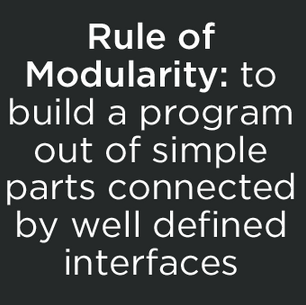

Introducing RequireBin, Browserify-CDN and npmsearch
Max Ogden
Three new projects that bring npm modules to the web
npm: Node Packaged Modules
A common misconception about npm is that since it has 'Node' in the name that it must only be used for server side JS modules. This is completely untrue! npm actually stands for Node Packaged Modules, e.g. modules that Node packages together for you. The modules themselves can be whatever you want -- they are just a folder of files wrapped up in a .tar.gz, and a file called package.json that declares the module version and a list of all modules that are dependencies of the module (as well as their version numbers so the working versions get installed automatically). It's turtles all the way down - module dependencies are just modules, and those modules can have dependencies etc. etc. etc.
The main features that npm brings to the table (in my opinion) are:
- Automatic installation + upgrading (e.g. no more downloading individual .js files and moving them manually into your js/ folder)
- Modules specify a list of other modules that are dependencies
- Dependencies get installed at known working versions
- Each module gets it's own local set of working dependencies (different versions of the same module can be depended on by different modules in the same project)
- Dependencies can have dependencies
- The availability of solutions on npm makes you feel like a kid in a candy store
I've written more about the specifics of writing programs with npm in my Art of Node article. If you haven't grokked how npm works yet I highly encourage you to give it a spin. Some other great reads on the subject: Using npm on the client side and Browserify and the Universal Module Definition by @shamakry and Introduction to Browserify by Seth Vincent.
Browserify: Using npm for client-side programs
A traditional JS app that might have a few libraries like jquery.js, bootstrap.js, angular.js, underscore.js and a few additional plugins. Since there are only a handful of js files it's not a big deal to manually download, move and add a script tag for each one.
Node programs, on the other hand, don't have the same limitations as browsers. Any program can require() another program and start using it. Programs can be published as tiny components that do one thing well, a la Unix. There isn't a strict definition but generally speaking code is modular if it exposes a generically useful API that be used by multiple dependent modules.
There is only one problem: browsers don't have a good way to load modules. The state of the art is to have a ton of script tags that either leak globals e.g. how jQuery plugins all use $ or use RequireJS to manage loading code into the correct scopes.
Both of these approaches make tons of HTTP requests which means when your app gets bigger than a dozen or so dependencies then you'll want to start thinking about a build step to reduce page load time.
A good module system enables better code to be written. When you have to worry about limiting the number of script tags you will tend to use large kitchen sink style projects like jQuery. A build step is just some process that combines multiple JS programs into one larger JS program so that you can reduce the number of script tags on your page (and sometimes also other things like minifying code).
Browserify is a build tool that builds bundles of modules from npm. Here is a visualization (using the colony node module) of what the bundle looks like when browserify packages up the voxel-engine module:

Each dot is a fully fledged node module, complete with its own version number, github repo, author/maintainer and optional list of dependent modules. Each author gets their own color and the circle sizes are based on how large the modules are.
Thanks to npm and browserify the Voxel.js project has seen a couple dozen unique contributors create around 100 modules over the last six months. The conventions are pretty simple: Use npm and name your module voxel-"something" so that it's easy to find. Most of them don't even run in node itself as they require WebGL to function, but that's okay because node is simply packaging them up for browsers.
When browserify bundles up the voxel-engine module it gathers up all of the dependencies in the graph and combines them into a single JS program that you can load into a web browser and run.
Browserify CDN
Browserify is written with Node and is usually executed on the command line on the same computer that a program is being developed on. To make browserify more accessible to JavaScripters that aren't as comfortable with the command line or Node browserify-cdn was developed by Joshua Holbrook, a Node hacker who has formerly worked on the Node hosting platform Nodejitsu. It's a really well designed caching + API layer built on top of browserify that automatically installs and packages up any module available on npm.
This week I set up a production ready instance of browserify-cdn over at http://wzrd.in (wizardin', like the browserify logo). It's also pretty easy to host an instance yourself. The browserify-cdn API is CORS enabled which means you can load bundles from anywhere on the internet (and do things like cache them in IndexedDB).

RequireBin
In the spirit of JSFiddle and JSBin, RequireBin is a web application that I wrote over this last weekend for making short + sweet shareable JS applications that run in the browser. The major difference from similar works being that RequireBin is built on top of browserify-cdn and therefore provides access to the wealth of modules on npm. RequireBins are saved as github gists so that each one is clone-able and fork-able and the RequireBin website itself is just a static site that is hosted on Github Pages.
npmsearch
The npm command line tool has a built in search feature but it is quite barebones and doesn't have a dedicated full text index. To provide a better search experience to npm users Elijah Insua (tmpvar) has created npmsearch.com which offers lightning fast search (Solr + SSDs) and a CORS enabled JSON API for adding npm search to any app.

Here's a live embedded iframe of this RequireBin integrating with the npmsearch API and rendering output to a fake ANSI terminal via hypernal and tablify, two modules I recently found on npm.
For a more complex RequireBin example check out this WebGL Ambient Occlusion Voxel rendering demo by computational geometry PHD student Mikola Lysenko:
Mikola also happens to be the most prolific author of node modules lately (according to npmjs.org), you should definitely look at his modules and read his blog.
I'll end this post with this, the first and arguably most important rule from The Art of Unix Programming, a text close to the hearts of many of the Node community members.
